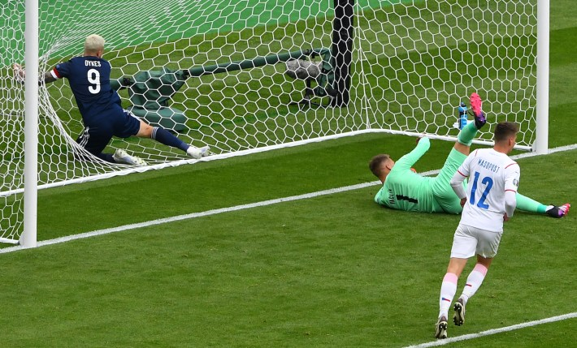
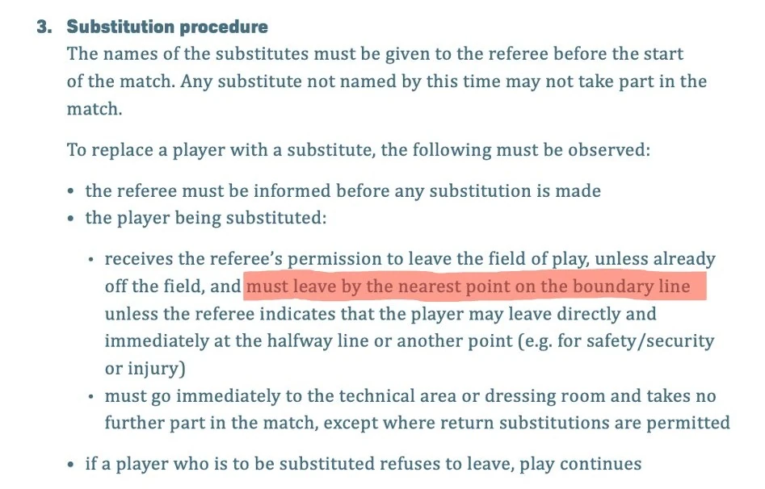
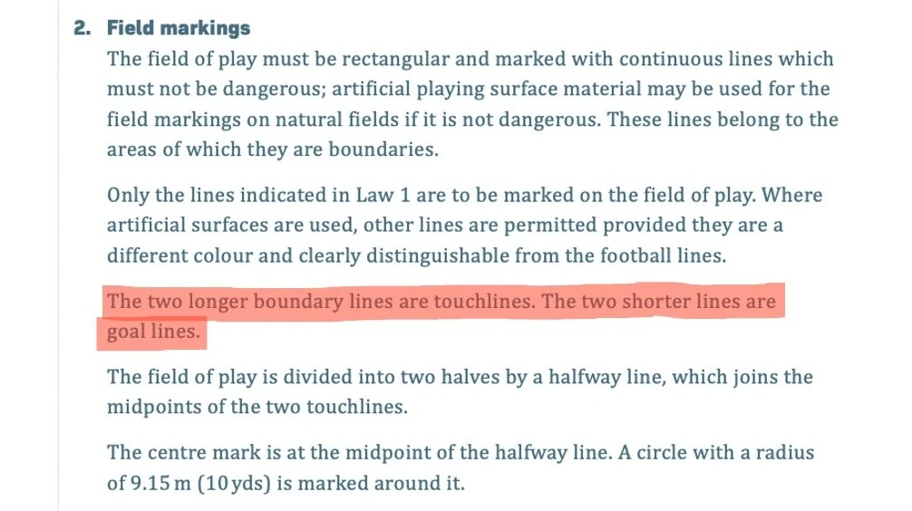
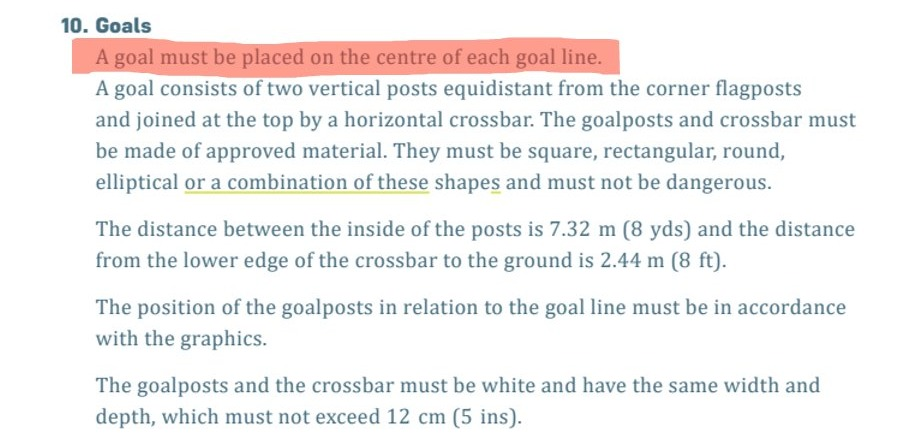
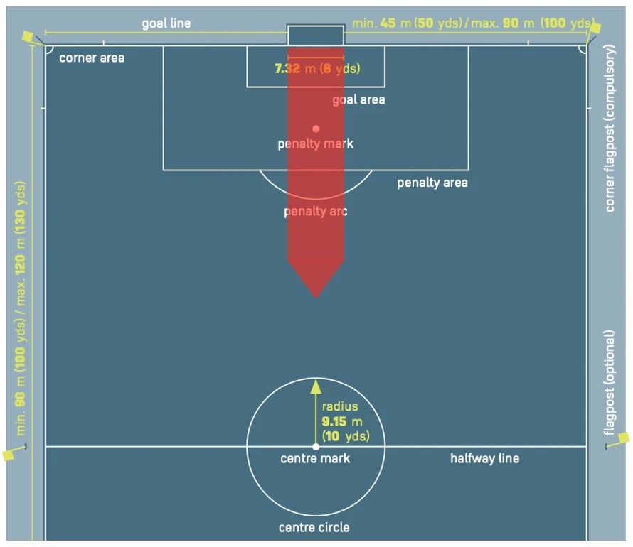
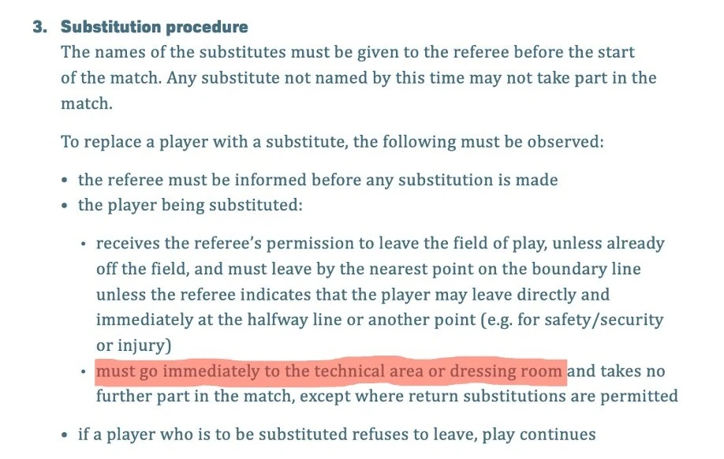
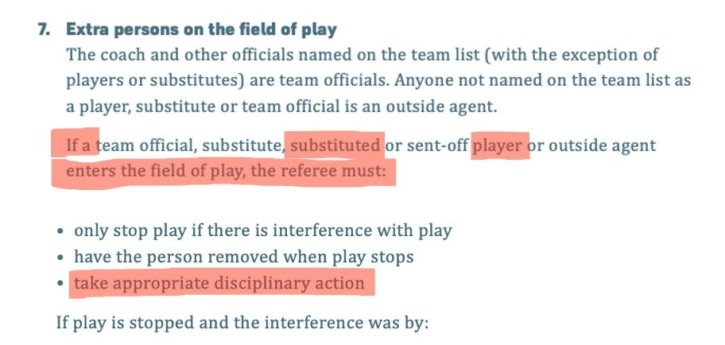

The Official Laws of Football Require Some Players to Trap Themselves in the Goal
Here’s why.

Substituted players must leave by the nearest point on the boundary line.

The goal line is a boundary line.

And the line in between the posts is part of the goal line.

Therefore, substituted players in the red part of the pitch are required by the the official IFAB Laws of the Game to exit via the line in between the posts. But that means trapping themselves in the goal.

You might think that these players could at least sit at the back of the goal and wait for the game to end. Not so. The rules also require these players to ‘go immediately to the technical area or dressing room’.

But to do that, they’ve got to re-enter the pitch. And once they re-enter the pitch, the rules require the referee to ‘take appropriate disciplinary action’.

Presumably that means a yellow card. In that case, substituted players who are already on a yellow card are required by the Laws to get themselves sent off. And if they’re sent off, no substitute can come on to replace them.